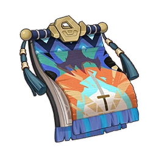

Natlan · Books & Literature
Spanking New Copy of "Tequil the Brave"
The revised, newer edition of Natlan’s Tequil the Brave fairy tale gives Tequil and Rimac a shared victory and a happier ending. Xilonen says the revision was poorly received and became a slow seller, unlike the scarce original edition.

A rewrite with a happier ending
Xilonen explains that Natlan has two editions of Tequil the Brave. The newer author revised the old story to give it a happy-ever-after conclusion, but Xilonen says the change was unpopular and the fresh copies sat unsold while original editions became hard to find.
The book is a children’s fairy tale obtained during Xilonen’s Tribal Chronicle. Its legendary events should be read as fiction within Natlan, even though it uses mythic names and an ancient setting.
The brothers keep the tribe’s fire alive
The new text begins with Tequil and Rimac born during a fearful night in a cavern. Tequil stares down the creatures, while Rimac’s laughter draws the tribe’s attention back to its wavering fire. When they feed it and take up their blades together, the cavern beasts retreat.
The brothers later help their people settle and defend themselves. Coatlicue, presented as a demon lord and earth mother, sends a serpent after them. The tale’s repeated image of fire links physical survival with the tribe’s courage and solidarity.
The serpent takes Rimac
Coatlicue makes a snake from cave sludge, gives it one of her eyes, and sends it to kill Tequil. The serpent instead tricks Rimac, who puts down his torch to tend a wounded rabbit. It bites him, takes his heart and soul, and helps extinguish the tribe’s fires.
Tequil leads the survivors to a new home, then asks the Goddess of Mountains and Fire for strength. He wants to rescue Rimac and destroy the serpent before his own blood runs dry.
Both brothers return
In the climax, Tequil faces Coatlicue while his blood burns like lava. In contrast with the aged edition, the Goddess of Mountains and Fire opens her eye, drives out the snake, and awakens the soul that had been Rimac. Falling rocks form a body for him, and the goddess gives of her own power so both brothers can return.
They accept food and water from their tribe and declare their hearts and blood belong to justice, fairness, and the brave. They call on the people to keep the flame burning together; neither brother makes the old edition’s final sacrifice.
Compare it with the original
The two books share the setting, brothers, demon lord, and broad conflict, but their outcomes are meaningfully different. The original has Tequil kill the possessed Rimac and then give his life to restore a volcano; the revised version has the goddess restore Rimac and return both brothers alive.
Xilonen frames the contrast as an authorial change in a fairy tale, not as two competing chronicles of actual events. The game does not name the author or confirm that the story records Natlan’s real past.
This is an original CoreGG reading guide, not an official HoYoverse article or a reproduction of the game text. Source links below identify the records used so you can check the original context.
Sources & references
Check these sources for the original game text and reference trail.